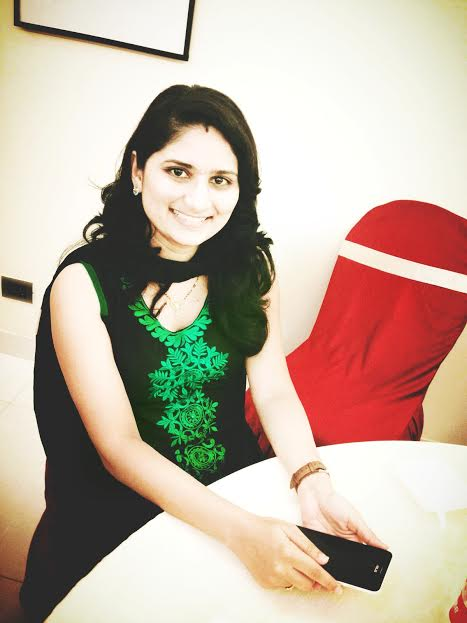

About Me

Hi! I'm Ashwini Todkar known as Ashwini Shivanath as well, a software professional. I am basically from India, now a home-maker residing in Houston area.
I have done my Masters in computer application from Pune University in India.
I have 5+ years of work experience in IT service industry as a Mainframe application developer in Automotive Domain.While working in my last job I got opportunity to work in different places in the world like UK, France and Netherland. It was such an enriching experience where I learned about work culture and ethics of different people around the world, got to see exciting places, which I always wished to.
One more great take-away from my last job was my life partner ❣ I met my husband Shivanath while working in this job. We are two poles apart personalities found love in each other, as they say "Opposites attracts". Our different likings and interests makes our life more interesting! ☺
Currently I am taking a break from my career for a while.I was always interested in Web designing and development while I was studying in my Masters of computer application degree.
Now I am utilizing my break-time in training myself to be one certified fullstack web developer that too from UT Austin, one of the prestigious American universities.Could I be more lucky!! ☺ So, Soon I'll be able to build you an awesome website!
Apart from computers my likes include Books, listening to music, learning new languages, sketching, watching movies and TV etc.
I love books in fiction, philosophy, history and romance catogories. Gabriel García Márquez, Paulo Coelho, Stephen King,Nicholas Sparks, Danielle Steel etc. are my favorite authors. and There are many more!! I am a big Game thrones fan as well !! ☺
Thanks for visiting my webpage!